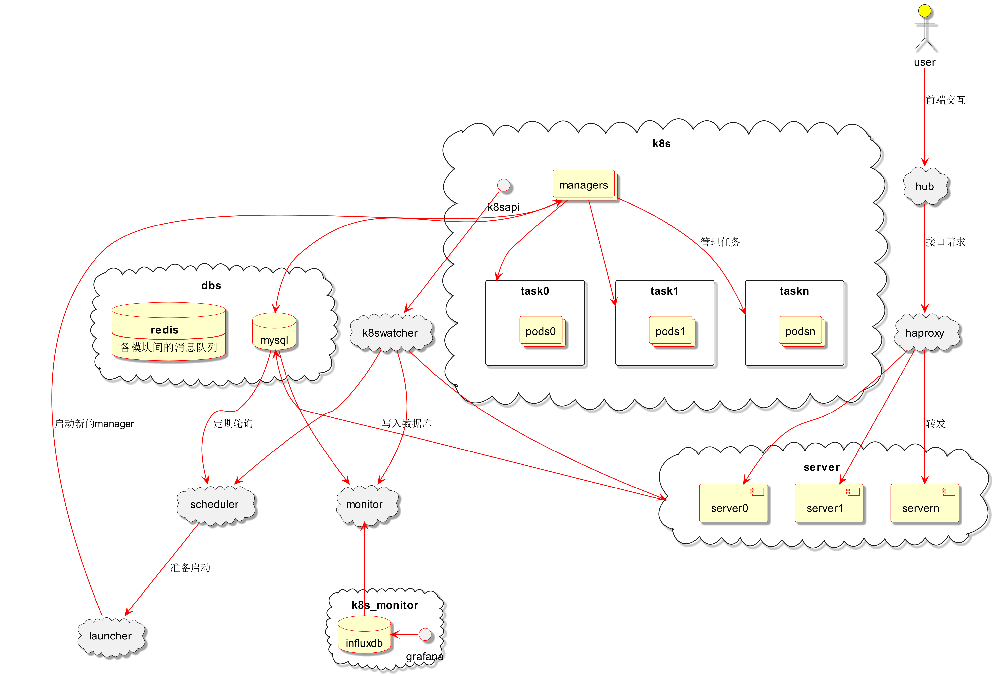
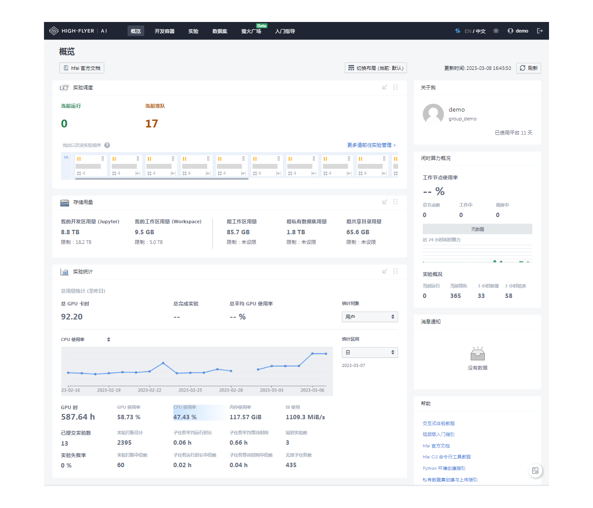

基本介绍¶
构建一个能管理大规模 GPU 集群资源的 AI 平台，主要会遇到如下几个痛点问题：
资源调度：算力规模不断扩大，而训练任务的计算需求又多种多样，如何处理任务和算力的关系以最大化集群资源使用？
使用效率：集群使用有峰谷差异，同时又要应对突发任务的需求，如何兼顾时效性和集群整体效率？
迭代适配：集群会有升级迭代，在调整算力规模、类型、使用规则等场景下，如何让平台快速适配，尽可能降低切换成本？
针对上述问题，幻方 AI 在自建的萤火集群上进行多年的研发与测试，积累了一套高效管理 GPU 集群资源的 AI 训练平台方案，名叫 HAI Platform。其以任务级分时调度共享 AI 算力的理念将集群零散资源进行整合再分配，成功支持在 1500+ 计算节点上稳定运行深度学习训练和其他多类型任务，日常算力占用率 95% 以上，日常 GPU 使用率 75% 以上，计算和存储节点间的数据吞吐 7TB/s 以上。
HAI Platform 可以部署在您的私有集群中，帮助您高效利用 GPU 集群资源，提升团队整体研发效率。
产品架构¶
HAI Platform 主要由8个模块组成，可以分为：
交互及接口：hub, haproxy, server
任务调度和管理：scheduler, launcher, manager, k8swatcher
监控及固化：dbs, monitor
整体架构如下图所示：

这些模块互相协作形成服务主体，基本的流程是：
用户请求经由 hub、haproxy 到达 server 处理 api 响应，任务信息写入数据库；
scheduler 定期轮询数据库中未完成的任务，按调度规则选出可启动的任务交给 launcher；
launcher 负责为任务创建 k8s 对象，包括每个任务的 manager 和执行 pod；
k8swatcher 为服务请求提供缓存。
核心概念¶
资源管理¶
计算资源¶
平台记录所有接入集群的算力节点，按资源类型（cpu，gpu等）、网络区域等条件分类标记，节点是算力资源分配的基本单位。
部署 HAI Platform 的集群不会将 GPU 资源池化，而是以计算节点为单位，鼓励用户所提交的任务一次性用满多张 GPU，进行并行训练。 用户提交任务时需选定节点数量 n，则该任务可获得 n 的整数倍个 GPU，比如在8卡计算节点上提交使用4个节点的任务，则该任务会获得32张 GPU 进行并行训练。每个任务至少使用 1 个节点。
存储资源¶
平台及所有算力节点需要连接集中存储，管理文件内容包括：
运行时需要的配置文件、启动脚本
服务日志
pgsql、redis等持久化文件目录
用户工作区文件目录，包括代码、配置文件、数据文件、任务运行日志等
虚拟环境文件目录
数据集
通常在分布式训练过程中，数据集需要通过高速文件系统读取，以提高训练效率，因此建议根据容量和性能需求搭建多个文件系统，并合理设计分配流量。
任务调度¶
任务¶
HAI Platform 的用户使用集群资源都是以任务的方式提交给平台，例如提交运行python代码、运行bash代码、启动开发容器等。
任务是 HAI Platform 使用的基本单位，而非用户。所有用户提交的任务都由 HAI Platform 统一管理和调度。
分时调度¶
部署 HAI Platform 的集群以分时调度的方式为任务分配计算节点，根据当前资源需求、集群忙闲程度等进行任务的中断和加载，任务代码需要遵循平台编码规则以确保可以断点续跑，具体包括：
接受集群的打断信号；
保存 checkpoint（模型参数，优化器参数等）；
通知集群打断；
从 checkpoint 恢复，继续运行。
具体操作请阅读分时调度篇章内容。
用户管理¶
用户配额¶
HAI Platform 以配额的方式记录集群的各类资源，通过优先级管理用户的使用权限，例如：某用户在 NORMAL 优先级上有10个 GPU 节点的配额。其在 HAI Platform 上提交若干个任务，则最多同时以 NORMAL 优先级调度10个计算节点运行。 算力资源优先满足高优先级用户的训练需求。同优先级内交替使用集群算力资源。
用户组¶
每个用户都属于一个用户组，资源和优先级配额按用户分配，同组用户可以共享虚拟环境、私有数据集。
管理员权限¶
管理员身份的用户有权限执行用户创建、停用、归档等操作，调整各类资源及优先级配额，后台管理开发容器等。
工作区¶
用户使用 HAI Platform 进行 AI 训练，需要先完成代码、数据、环境等迁移到集群。平台按用户、用户组在集群建立和管理工作区、数据集仓库。
工作区是用户在集群上自主管理的存储空间，有以下使用场景：
用户使用集群开发容器，已挂载工作区路径，在终端命令行访问；
用户在本地环境（集群外），使用平台提供的客户端工具与集群侧工作去目录同步、文件传输；
用户提交任务运行，任务容器挂载工作区路径，执行工作区路径下的代码。
环境管理¶
部署 HAI Platform 的集群会包含基础环境和用户自定义环境两种环境管理模式：
基础环境由平台统一管理，包含大部分主流依赖包，任务运行时默认加载。通常根据系统、GPU驱动及cuda版本等要求统一管理若干个基础环境。
自定义环境由用户通过客户端工具按需求安装依赖，同组用户可共享。
两种环境都可以通过 haienv 工具进行管理，适用于各种任务场景。通过基础环境的构建，我们希望尽可能降低 AI 研发前期的环境构建成本。
更多细节请阅读环境配置篇章内容。
可视化交互¶
开发容器额外运行了 JupyterLab 服务，支持可视化和交互式的开发方式：

更多细节请阅读 Studio 篇章内容。
数据管理¶
部署 HAI Platform 的集群会将训练数据存储在文件系统中。训练中的任务会实时从文件系统中读取数据，流转到计算节点。这里，优良的文件系统将是提高 GPU 利用率，进而提升集群整体效率的决定性因素之一。
为了最大化 GPU 利用率，降低数据读取的成本，幻方 AI 自研了高速文件系统 3FS，其专门针对深度学习训练中样本读取的场景进行优化，能支持计算和存储节点间 7TB/s 以上的数据吞吐。3FS 需要用户将原始数据中较多的小文件聚合成大文件进行存储，推荐使用 FFRecord 格式规范来聚合文件。